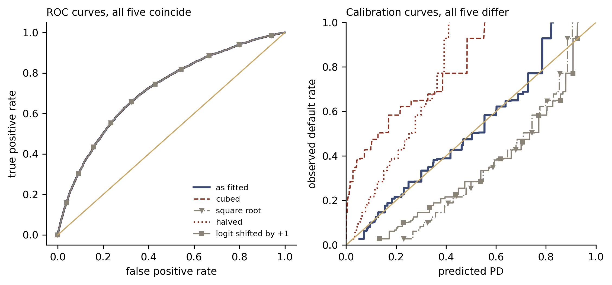

Credit Lecture 7: Balance Property, Auto-Calibration and Lift Charts
Deep Learning for Actuarial Modelling: a credit risk companion
Author
Mario Ervedosa, adapting Scognamiglio, Maggi and Wüthrich
Published
September 2, 2026
Abstract
Lecture 7 of Deep Learning for Actuarial Modeling collects the calibration vocabulary the earlier lectures kept borrowing, and this companion pays off a debt the fourth and fifth credit lecture recorded explicitly. Three properties nest. Global statistical unbiasedness is out-of-sample and unverifiable on one dataset; the balance property is in-sample, exact for the canonical-link GLM and missed by 0.69 per cent by the network; auto-calibration asks that every price cohort finance its own defaults, which is what the supervisory expectation on a rating system is really asking for. The repair hierarchy follows, from a one-parameter intercept shift that fixes the aggregate to an isotonic recalibration that fixes every cohort. We then show that the Gini coefficient, which every credit validation pack leads on, is invariant to any strictly monotone transform of the predictions and therefore cannot see either defect: cubing the GLM’s fitted PDs leaves its Gini unchanged at 0.4364 while the portfolio’s expected loss falls by 82 per cent. Lift charts, the double lift chart and Murphy’s decomposition close the lecture, and the out-of-time window supplies a model whose discrimination is intact while its level is 35 per cent too high.
Introduction
The fourth and fifth credit lecture left a promissory note. Its network beat the logistic GLM out-of-sample and, in the same breath, overshot the observed default count by 237 loans where the canonical-link GLM had been exact, and the text deferred the repair to “the calibration companion”. The sixth lecture then proved that ensembling cannot discharge the debt, because the mean of an ensemble’s predictions is the mean of its members’ means. This lecture is that companion, and it arrives with the credit reading of calibration already half written, because a rating system whose estimated PDs miss realised default rates grade by grade has a finding written against it.
Three properties are on the table and they nest, which is the organising claim. Global statistical unbiasedness is an out-of-sample statement about the fitting procedure, so a lender cannot check it. The balance property is its in-sample counterpart, which is cheap to verify and exact for a maximum likelihood GLM under the canonical link. Auto-calibration is stronger than both. Whereas balance constrains the portfolio as a whole, auto-calibration demands that every price cohort be self-financing on its own. Consequently we show what each property buys with a predictor built from the Bondora book, which satisfies the balance property exactly while charging its safest decile 13.7 percentage points more than that decile costs and its riskiest 23.4 percentage points less.
The diagnostics then follow the source deck: the actual versus predicted plot under quantile binning, its smooth versions under local and isotonic regression, the lift chart, the double lift chart, and Murphy’s score decomposition. One appendix of the course deserves promotion to the main argument here. Although the Gini coefficient is the headline discrimination measure in every credit validation pack, it is purely rank based, and it is therefore blind by construction to everything this lecture is about.
Two conventions carry over from the credit series and differ from the course. There is no exposure offset, since default_12m is a zero-one flag over a fixed twelve-month window, so every bin average below is an unweighted default rate and the case weights \(v_i\) of the source deck are all one. Second, the Bondora book defaults at about 29 per cent, so deciles are richly populated and these diagnostics are stable. On a low-default portfolio, by contrast, each grade carries single-digit default counts, so decile binning collapses and the regulatory apparatus reaches for exact binomial tests instead. That machinery belongs to the IRB lecture rather than to this one.
Imports and shared settings
import numpy as npimport pandas as pdimport polars as plimport torchimport statsmodels.api as smimport statsmodels.formula.api as smfimport matplotlib.pyplot as pltfrom scipy.optimize import brentqfrom sklearn.isotonic import IsotonicRegressionfrom sklearn.metrics import roc_auc_score, roc_curvefrom statsmodels.nonparametric.smoothers_lowess import lowessBLUE, RED, GREY ="#3B4A75", "#8C2F1E", "#8A8377"plt.rcParams.update({"figure.dpi": 150, "font.size": 9,"axes.spines.top": False, "axes.spines.right": False})
1 Unbiasedness in a credit model
The source deck opens by observing that unbiasedness matters in actuarial pricing whatever meaning one attaches to the word, and it then lists four meanings. Each has a credit counterpart worth naming before the formal definitions begin.
An in-sample bias has to be avoided during model selection, since a predictor chosen on its in-sample loss generalises poorly. Indeed the credit series has already met this in the guise of encoding leakage, where the sixth lecture measured up to 1.33 deviance points of pure illusion that an in-sample check could not see. Separately, an estimated regression model should carry no statistical bias, so that the average level is right; for a lender that level is the portfolio’s expected loss and the capital plan built on it. Third, the intercept of a GLM is called the bias term in machine learning, and it turns out to be the instrument of the first repair below. Fourth, algorithmic decision making raises the question of unfair discrimination, which in consumer lending is a live regulatory concern in its own right and is out of scope here.
1.1 Global statistical unbiasedness
An estimated model \(\widehat{\mu}_{\mathcal{L}}\), fitted on a learning sample \(\mathcal{L} = (Y_i, \boldsymbol{X}_i, v_i)_{i=1}^n\), is globally statistically unbiased if
for a new observation \((Y, \boldsymbol{X}, v)\) independent of \(\mathcal{L}\). Two features of the definition decide how useful it is in practice. It is an out-of-sample statement, since the expectation runs over fresh data rather than over the fitted sample, and verifying it requires both knowledge of \(\mathbb{E}[vY]\) and the ability to resample \(\mathcal{L}\). Consequently a lender holding one loan book and one history cannot check it directly. Consequently the property is a statement about the fitting procedure, and it is not a test a validator can run.
1.2 The balance property
The in-sample counterpart is verifiable, and it is the one a scorecard team has always used.
Definition. A fitting procedure \(\mathcal{L} \mapsto \widehat{\mu}_{\mathcal{L}}\) satisfies the balance property if, for almost every realisation of the learning sample,
Since \(v_i \equiv 1\) here and \(Y_i\) is the default flag, the left side is the sum of fitted PDs while the right side is the observed default count. The property was introduced in credibility theory by Bühlmann and Gisler (2005) and is studied in general form by Lindholm and Wüthrich (2025). Crucially it needs no knowledge of the true mean, because it is a re- allocation of the portfolio’s total defaults across borrowers rather than a claim about their level. The second credit lecture proved that a maximum likelihood GLM under the canonical link satisfies it, and called the result calibration in the large. For the Bernoulli response of a PD model that canonical link is the logit.
The mathematical result is sharp in a way worth restating. Balance holds for the canonical link and, in general, for that link alone; a probit or complementary log-log fit to the same data is a maximum likelihood fit that does not balance. Where balance fails, the standard repair adjusts the intercept. Furthermore a repair may be needed even where it held, because the forward default level can shift for reasons the covariates do not carry, which is the concept-drift problem of Brauer, Menzel and Wüthrich (2025).
1.3 Where the credit series stands
We rebuild the fourth and fifth lecture’s two models exactly, with the same modelling frame, the same seeds, and the same architecture, so that every number below reconciles with that lecture exactly.
Modelling table, design matrix and splits (lecture 4/5, unchanged)
GLM, in-sample: deviance 106.641 AUC 0.7263 Gini 0.4525 mean PD 0.28878 vs observed 0.28878
GLM, test : deviance 108.197 AUC 0.7182 Gini 0.4364 mean PD 0.28878 vs observed 0.29209
FNN, in-sample: deviance 104.606 AUC 0.7416 Gini 0.4831 mean PD 0.29077 vs observed 0.28878
FNN, test : deviance 107.621 AUC 0.7241 Gini 0.4481 mean PD 0.29111 vs observed 0.29209
Now the balance property itself, in-sample, where it is a statement about counts rather than rates.
for lbl, p in [("GLM", p_glm_l), ("FNN", p_fnn_l)]:print(f"{lbl}: sum of fitted PDs {p.sum():10,.2f} "f"observed defaults {y_learn.sum():,.0f} "f"relative miss {(p.sum() / y_learn.sum() -1) *100:+.4f}%")
GLM: sum of fitted PDs 34,345.00 observed defaults 34,345 relative miss -0.0000%
FNN: sum of fitted PDs 34,582.23 observed defaults 34,345 relative miss +0.6907%
The GLM reproduces the 34,345 observed defaults to machine precision, as the score equations require. The network’s fitted PDs, by contrast, sum to 34,582, an overshoot of 237 defaults or 0.69 per cent of the portfolio’s total, which it commits while holding the better deviance. Read as an expected loss, a 0.69 per cent overstatement of a book’s default count is small enough to survive a glance and large enough to matter in a capital plan. Moreover it is entirely invisible in the deviance table above, because deviance rewards the fit at every borrower and never audits the total. The sixth lecture’s twenty-network ensemble misses by \(-0.42\) per cent, which is the average of its members’ misses. Hence averaging compresses the seed-to-seed dispersion in the miss, although it leaves the shared component untouched.
1.4 In-sample balance does not deliver out-of-sample unbiasedness
The distinction between the two properties is easy to state and easier to forget, so it is worth measuring. The GLM balances exactly on the learning sample. Applied to the held-out test sample it does not.
for lbl, p in [("GLM", p_glm_t), ("FNN", p_fnn_t)]:print(f"{lbl}: sum of predicted PDs {p.sum():9,.2f} "f"observed defaults {y_test.sum():,.0f} "f"relative miss {(p.sum() / y_test.sum() -1) *100:+.4f}%")
GLM: sum of predicted PDs 8,586.44 observed defaults 8,685 relative miss -1.1348%
FNN: sum of predicted PDs 8,655.72 observed defaults 8,685 relative miss -0.3371%
On the test sample the exactly balanced GLM understates the observed 8,685 defaults by 1.13 per cent, whereas the network that overshot in- sample understates by only 0.34 per cent. The arithmetic is unremarkable, because the test sample happens to default at 29.21 per cent against the learning sample’s 28.88 per cent, and an 80/20 random split of 148,667 loans leaves that much sampling variation in the response level alone. The reading is the one the definitions imply. An in-sample identity constrains the fit, although it makes no promise about a fresh sample. Consequently a validator who checks calibration in the large on the development sample has verified an algebraic property of the estimator rather than the accuracy of the level.
2 Auto-calibration
Definition. A regression function \(\mu: \mathcal{X} \to \mathbb{R}\) is auto-calibrated for \((Y, \boldsymbol{X})\) if, almost surely,
\[
\mu(\boldsymbol{X}) = \mathbb{E}\left[\left. Y \,\right|\, \mu(\boldsymbol{X})\right].
\]
The condition asks that the set of borrowers who receive a given PD default at that rate. Every price cohort is then self-financing for its own claims, so no systematic cross-financing runs between cohorts. In insurance pricing that is the requirement that a tariff cell collect the premium its own claims cost; in credit it is the requirement that a rating grade’s assigned PD match the default rate realised inside the grade, which is what a supervisor examines grade by grade when it tests the calibration of a rating system.
Auto-calibration is strictly stronger than the balance property, because averaging the defining identity over the portfolio recovers balance in expectation, whereas balance says nothing about any individual cohort. Since the gap between the two is where a credit model does its real damage, it is worth building one from the Bondora book directly.
2.1 A predictor that balances exactly and cross-finances badly
Take the GLM’s test predictions and shrink them towards the portfolio mean by a factor \(\lambda\),
Because the transform is affine about the mean, the sum of predictions is unchanged for every \(\lambda\) and the balance property survives exactly. It is also strictly increasing, so it preserves the risk ranking perfectly, and every rank-based statistic with it.
lambda mean PD sum vs GLM Gini deviance miscalibration min PD max PD
1.0000 0.2888 0.0000 0.4364 108.1972 0.3310 0.0533 0.8273
0.6000 0.2888 0.0000 0.4364 110.1371 2.2709 0.1475 0.6119
0.3000 0.2888 0.0000 0.4364 114.2788 6.4126 0.2181 0.4503
At \(\lambda = 0.3\) the predictor is exactly as balanced as the GLM, its mean PD is identical to five decimals, and its Gini coefficient is identical at 0.4364. Its out-of-sample deviance has nevertheless deteriorated by 6.1 points, from 108.20 to 114.28, while the isotonic miscalibration term has risen from 0.33 to 6.41 deviance points. Therefore the whole of the damage sits in auto-calibration, and the decile picture shows where.
Decile binning helper
def decile_table(pred, obs, k=10):"""Quantile-bin on the predictor; return bin counts, barycentres and actuals.""" qq = np.quantile(pred, np.arange(k +1) / k) b = np.ones(len(pred), int)for t inrange(1, k): b = b + (pred > qq[t]).astype(int) rows = [{"bin": j, "n": int((b == j).sum()),"pred": pred[b == j].mean(), "obs": obs[b == j].mean()}for j inrange(1, k +1)]return pd.DataFrame(rows), b
Actual against predicted default rate by decile of the predictor, out-of-sample. The left panel is the logistic GLM, whose deciles sit close to the diagonal. The right panel is the same GLM shrunk 70 per cent towards the portfolio mean, which holds the balance property exactly and preserves the risk ranking exactly. Its lowest decile is charged 23.3 per cent against a realised 9.6, and its highest is charged 38.9 against a realised 62.3, so the safest decile pays 13.7 percentage points more than it costs while the riskiest pays 23.4 points less.
Every dot below the diagonal is a cohort paying more than it costs, while every dot above it is a cohort paying less, so the vertical gap is the transfer. The shrunk predictor is thus the course’s cross-financing cartoon drawn from a real loan book, and it makes the hierarchy concrete. Global unbiasedness constrains the level in expectation, the balance property constrains the level in sample, and auto-calibration constrains every cohort. A credit model can satisfy the first two exactly and still misprice its safest borrowers by a factor of 2.4.
2.2 The actual versus predicted plot
The diagnostic used above is the actual versus predicted plot, and its recipe is worth stating precisely, because the binning variable decides what the plot means. One puts the observations \(Y\) on the vertical axis against the predictions \(\widehat{\mu}(\boldsymbol{X})\) on the horizontal, bins on quantiles of the predictions to reduce volatility, and takes empirical means within each bin for both. The horizontal coordinate of each dot is therefore the barycentre of the predictions in that decile rather than the decile’s midpoint. Furthermore, where the model has been fitted on \(\mathcal{L}\), the plot belongs on the test sample \(\mathcal{T}\), because an in-sample version flatters a flexible model.
Actual against predicted plot by decile binning on the random split’s test sample, GLM in the left panel and network in the right. Both sets of actuals are monotone in the predictor, so both models rank risk correctly at decile resolution. The GLM’s largest within-decile miss is 1.8 percentage points and the network’s is 3.4, at the two ends of its range: the network charges its lowest decile 7.6 per cent against a realised 9.9 and its highest 65.4 against a realised 62.0.
GLM: actuals monotone True; largest within-decile miss 0.0183; predicted spread 6.10x, realised spread 6.48x
FNN: actuals monotone True; largest within-decile miss 0.0340; predicted spread 8.57x, realised spread 6.28x
The two models fail in opposite directions, which the spreads name. Since the GLM’s top decile is charged 6.10 times its bottom decile and realises 6.48, it under-spreads, and its extreme cohorts are slightly under-differentiated. The network, conversely, charges 8.57 times and realises 6.28, so it over-spreads, and roughly a quarter of the discrimination it claims at the extremes is not there. For a lender the two errors are not interchangeable. Under-spreading leaves margin on the table at the good end while pricing the bad end too kindly, whereas over-spreading declines business that would have performed and, at the top of the range, over-provisions against a risk the cohort does not carry.
2.3 Local regression and isotonic regression
Decile binning imposes ten bins by fiat, so two smoother readings of the same question are worth having. Local regression (Loader, 1999) fits a low-degree polynomial inside a moving window whose bandwidth is chosen so that the window holds a nearest-neighbour fraction \(\alpha\) of the data. The course uses locfit in R with quadratic splines at \(\alpha =
10\%\), whereas the Python counterpart here is lowess, which is locally linear. The substantive hyper-parameters are nonetheless the same, and both smoothers are sensitive to them, which is the objection.
Isotonic regression, by contrast, answers the same question with no hyper-parameter at all. It returns the monotone step function closest to the actuals in squared error, its blocks are found by pool-adjacent- violators, and the result is exactly the recalibrated predictor \(\mu_{\rm rc}(\boldsymbol{X}) = \mathbb{E}[Y \mid \mu(\boldsymbol{X})]\) that the definition of auto-calibration asks for. Fitted on the sample it is being read on, it is therefore empirically auto-calibrated by construction, which is the point Wüthrich and Ziegel (2024) make.
Smooth actual against predicted readings on the test sample. The grey line is a locally linear regression at a nearest-neighbour fraction of 10 per cent, the blue step function is an isotonic regression of the actuals on the predictions, and the gold diagonal is exact auto-calibration. Both models track the diagonal closely across the bulk of the range. Above a predicted 0.6 the network’s isotonic curve flattens beneath the diagonal, charging that tail a mean 67.4 per cent against a realised 64.1, and both step functions then jump to 1.0 in their terminal block, which is the end-of-range overfitting the next section has to handle.
Both models come out close to auto-calibrated on this book. Although the isotonic recalibration moves the GLM’s predictions by as much as 17.8 percentage points and the network’s by 9.4, it buys only 0.33 and 0.40 deviance points respectively, because those largest moves fall in the sparse top tail. Against a total deviance of 108, a miscalibration of a third of a point is 0.3 per cent of the loss, so the Bondora fits leave very little on the table at cohort level. A repair can only recover what miscalibration costs, which is the constraint the next section runs into.
3 Repairing calibration
Two repairs are available, and they sit in a hierarchy. Since both are applied after the fit, neither disturbs the model that produced the ranking.
The intercept correction adds a constant on the linear predictor scale, choosing \(c\) so that the mean prediction matches the observed rate. It has one parameter and it restores the balance property exactly, although it can do nothing about any individual cohort. In the third credit lecture’s vocabulary it is therefore the degenerate combined actuarial neural network, whose network component is switched off.
The isotonic recalibration replaces \(\widehat{\mu}\) by \(\widehat{\mu}_{\rm rc} = \widehat{\mathbb{E}}[Y \mid \widehat{\mu}]\), estimated by isotonic regression. It restores auto-calibration empirically on whatever sample it was fitted on, and therefore restores balance as a by-product. Moreover, because it is monotone, it leaves the risk ranking untouched up to the ties it creates.
def logit(p): p = np.clip(p, 1e-12, 1-1e-12)return np.log(p / (1- p))def expit(x):return1/ (1+ np.exp(-x))c_star = brentq(lambda c: expit(logit(p_fnn_l) + c).mean() - y_learn.mean(), -5, 5)p_ic_l, p_ic_t = expit(logit(p_fnn_l) + c_star), expit(logit(p_fnn_t) + c_star)iso_L = IsotonicRegression(out_of_bounds="clip").fit(p_fnn_l, y_learn)p_iso_l, p_iso_t = iso_L.predict(p_fnn_l), iso_L.predict(p_fnn_t)print(f"intercept shift on the logit scale: c* = {c_star:+.6f}")print(f"isotonic recalibration: {np.unique(p_iso_l).size} distinct step heights "f"fitted on the learning sample; applied to the test sample it assigns "f"exactly zero to {(p_iso_t ==0).sum()} loans and exactly one to "f"{(p_iso_t ==1).sum()}\n")rows = []for lbl, pl_, pt_ in [("FNN, as fitted", p_fnn_l, p_fnn_t), ("FNN + intercept", p_ic_l, p_ic_t), ("FNN + isotonic", p_iso_l, p_iso_t), ("GLM, for reference", p_glm_l, p_glm_t)]: rows.append({"predictor": lbl,"balance miss, learn %": (pl_.sum() / y_learn.sum() -1) *100,"balance miss, test %": (pt_.sum() / y_test.sum() -1) *100,"deviance, learn": bernoulli_deviance(pl_, y_learn),"deviance, test": bernoulli_deviance(pt_, y_test),"Gini, test": gini(pt_, y_test)})print(pd.DataFrame(rows).to_string(index=False, float_format=lambda v: f"{v:.4f}"))
intercept shift on the logit scale: c* = -0.011504
isotonic recalibration: 105 distinct step heights fitted on the learning sample; applied to the test sample it assigns exactly zero to 5 loans and exactly one to 2
predictor balance miss, learn % balance miss, test % deviance, learn deviance, test Gini, test
FNN, as fitted 0.6907 -0.3371 104.6061 107.6206 0.4481
FNN + intercept 0.0000 -1.0208 104.6038 107.6251 0.4481
FNN + isotonic 0.0000 -0.9643 104.4753 107.9825 0.4480
GLM, for reference -0.0000 -1.1348 106.6412 108.1972 0.4364
Three results deserve reading slowly. The intercept correction does its job exactly, driving the in-sample balance miss from \(+0.69\) per cent to zero and moving the in-sample deviance by 0.002 points and the test deviance by 0.005, which makes it the cheapest repair in this series. The direction of that in-sample move is guaranteed, because it follows from the arithmetic. Matching the mean prediction to the observed rate is precisely the score equation for a free intercept over the offset \(\log(\widehat{\mu}/(1 - \widehat{\mu}))\). Hence \(c^*\) is the maximum likelihood intercept and the in-sample deviance can only improve. The isotonic recalibration also balances in-sample and improves the in-sample deviance by 0.13 points, and out of sample it is worse than the network it repaired, 107.98 against 107.62. Fitting 105 step heights on the learning sample overfits the recalibration itself, which is exactly the end-of-range overfitting that Wüthrich and Ziegel warn about. Since the miscalibration available to recover was only 0.40 points to begin with, there was never much room for the repair to pay for its own estimation.
The third result is the sharper one. Enforcing in-sample balance made out-of-sample balance worse, taking the network’s test miss from \(-0.34\) per cent to \(-1.02\) per cent, which lands it beside the GLM’s \(-1.13\). The network’s in-sample overshoot had been partly offsetting the test sample’s higher default rate, and removing the overshoot removed the offset. Hence a balance correction should be understood as the removal of an in-sample artefact rather than as an improvement in the level, and a model owner who claims the latter is claiming something the split cannot support.
3.1 Two cautions before a recalibration reaches production
An isotonic recalibration assigns each block the observed default rate inside it, so a block containing no defaults receives a PD of exactly zero. On the test sample above the recalibrated network assigns exactly zero to five loans and exactly one to two more. A PD of zero is inadmissible in a regulatory model, because the CRR carries a floor of 0.03 per cent on non-defaulted exposures. It is also inadmissible arithmetically, since a single default inside such a block makes the log likelihood infinite. Any production recalibration therefore needs a floor and a cap, and the choice of both is a modelling decision to be documented rather than a default to be inherited from a library.
Second, because both repairs are monotone in the original score, neither can correct a ranking error. Where the actuals are non-monotone in the predictor, as the course’s own motor example finds and this book does not, isotonic regression imposes monotonicity by pooling the offending cohorts. Consequently the reported curve looks calibrated while the underlying model still ranks two cohorts the wrong way round. The diagnosis for a ranking failure is the lift chart below, and the remedy is a better model.
4 Discrimination and the Gini coefficient
Every credit validation pack this author has read leads on the Gini coefficient, and the course confines it to an appendix with a warning. The warning deserves the main text.
The Gini coefficient of a PD model is a linear rescaling of the area under the ROC curve,
\[
{\rm Gini} = 2\,{\rm AUC} - 1 ,
\]
so the two carry identical information, and the credit convention simply puts a random model at zero rather than at one half. On the random split the GLM scores 0.4364 out-of-sample against the network’s 0.4481, a difference of 1.2 Gini points that a scorecard team would regard as real and modest.
Both statistics are computed from the ordering of the predictions alone. Consequently any strictly increasing transform of a model’s predictions leaves the Gini coefficient exactly unchanged, whatever it does to the level, to the spread, or to the expected loss the model implies. Since that claim is exact rather than approximate, the demonstration takes one line per transform.
Cubing the GLM’s fitted PDs leaves the Gini coefficient at 0.4364 and the AUC at 0.7182, to four decimals, while the implied default count falls by 82 per cent and the deviance rises from 108.20 to 197.31. Similarly, halving them leaves the Gini identical, although it now understates the book’s defaults by half. A validation report that leads on Gini, and reports it alone, cannot distinguish any of these five models from one another, and one of them would understate a portfolio’s expected loss by four fifths.
fig, axes = plt.subplots(1, 2, figsize=(7.6, 3.6))# Marker shapes carry the two grey series apart, so the panels survive a# greyscale print without the distinction resting on hue.styles = [("as fitted", BLUE, "-", 1.8, ""), ("cubed", RED, "--", 1.1, ""), ("square root", GREY, "-.", 1.1, "v"), ("halved", RED, ":", 1.3, ""), ("logit shifted by +1", GREY, "-", 1.1, "s")]for k, col, ls, lw, mk in styles: fpr, tpr, _ = roc_curve(y_test, transforms[k]) axes[0].plot(fpr, tpr, color=col, ls=ls, lw=lw, label=k, marker=mk, markersize=3.5, markevery=0.12)axes[0].plot([0, 1], [0, 1], color="#C8A96A", lw=1)axes[0].set_xlabel("false positive rate"); axes[0].set_ylabel("true positive rate")axes[0].set_title("ROC curves, all five coincide", fontsize=9, loc="left")axes[0].legend(fontsize=7, frameon=False, loc="lower right")for k, col, ls, lw, mk in styles: v = transforms[k] rc = IsotonicRegression(out_of_bounds="clip").fit(v, y_test).predict(v) o = np.argsort(v) axes[1].plot(v[o], rc[o], color=col, ls=ls, lw=lw, label=k, marker=mk, markersize=3.5, markevery=0.12)axes[1].plot([0, 1], [0, 1], color="#C8A96A", lw=1)axes[1].set_xlim(0, 1); axes[1].set_ylim(0, 1)axes[1].set_xlabel("predicted PD"); axes[1].set_ylabel("observed default rate")axes[1].set_title("Calibration curves, all five differ", fontsize=9, loc="left")plt.tight_layout(); plt.show()

The same five predictors under two lenses. The left panel holds the ROC curves of all five, which coincide exactly because each is a strictly increasing transform of the others, so all five score a Gini of 0.4364. The right panel holds their isotonic calibration curves against the gold diagonal, where the cubed and halved variants (red) sit far above the diagonal and the square-root and logit-shifted variants (grey, marked with triangles and squares) far below. Discrimination cannot see the difference; calibration is the whole difference.
The course adds a second warning of a different kind. Because the Gini score is not a strictly consistent scoring function for the mean, minimising it does not identify the best predictive model, and a model selected on Gini alone has been selected on a criterion that the true regression function need not optimise. The practical corollary for a credit team is that Gini answers exactly one question, namely whether the score ranks risk correctly, and that the balance property, the actual versus predicted plot, and the decomposition below answer the others. Furthermore Brauer and Wüthrich (2025) treat the awkward cases of ties and case weights, both of which bite on a grouped credit portfolio.
5 Lift charts
A lift chart carries the same statistics as the actual versus predicted plot in a layout built for comparing models. One bins on the predictor as before, then plots both the binned prediction averages and the binned response averages against the bin labels, so the horizontal axis is ordinal. Goldburd et al. (2020) read three things off it, and all three transfer to a scorecard unchanged.
Auto-calibration shows as agreement between the predictions and the actuals within each bin. Monotonicity shows as an increasing sequence of actuals, which under auto-calibration is what a correct risk ranking looks like. Discrimination, finally, shows as the gap between the lowest and the highest bin, which is the lift, so a model that separates the book more sharply has more of it.
Lift charts on the random split’s test sample, GLM in the left panel and network in the right. Orange circles are the binned prediction averages and blue triangles the binned realised default rates. Both models produce monotone actuals, so both rank correctly at this resolution. The network’s predictions fan wider than its actuals at both ends, which is the over-spread the decile table measured; the GLM’s sit inside its actuals at the bottom end.
The course’s own example separates the three readings cleanly, with its first model better calibrated and its second both monotone and more discriminating, so its lift charts recommend the second. The Bondora comparison, however, is less tidy, and the reason is instructive. Since both models are monotone and both realise a lift close to 6.3 to 6.5 times, the difference between them lives almost entirely in how honestly they report their own spread. The network’s mean absolute bin miss of 1.19 percentage points is a fifth larger than the GLM’s 1.00, and its extra 1.2 Gini points came from the same widened range that costs it that calibration.
5.1 The double lift chart
A double lift chart puts both models in one picture by binning on their disagreement. With strictly positive predictions from Model 1 and Model 2, compute the ratios
\[
\kappa_t = \frac{\widehat{\mu}_2(\boldsymbol{X}_t)}{\widehat{\mu}_1(\boldsymbol{X}_t)},
\qquad 1 \le t \le m,
\]
and quantile-bin on \(\kappa\). The lowest bin holds the risks that Model 2 judges most favourably relative to Model 1, whereas the highest bin holds those it judges most harshly. The actuals then adjudicate, because the bins are selected precisely where the two models disagree.
kappa = p_fnn_t / p_glm_tqk = np.quantile(kappa, np.arange(11) /10)bk = np.ones(len(kappa), int)for t0 inrange(1, 10): bk = bk + (kappa > qk[t0]).astype(int)dl = pd.DataFrame([{"bin": j, "n": int((bk == j).sum()), "kappa": kappa[bk == j].mean(),"GLM": p_glm_t[bk == j].mean(), "FNN": p_fnn_t[bk == j].mean(),"actual": y_test[bk == j].mean()} for j inrange(1, 11)])print(dl.to_string(index=False, float_format=lambda v: f"{v:.4f}"))w_glm, w_fnn = (dl["GLM"] - dl["actual"]).abs(), (dl["FNN"] - dl["actual"]).abs()print(f"\nkappa ranges from {kappa.min():.3f} to {kappa.max():.3f}")print(f"mean absolute bin miss: GLM {w_glm.mean():.4f}, FNN {w_fnn.mean():.4f}; "f"the network is closer in {(w_fnn < w_glm).sum()} of 10 bins")
bin n kappa GLM FNN actual
1 2974 0.6150 0.2055 0.1262 0.1681
2 2973 0.7566 0.2197 0.1664 0.1978
3 2973 0.8405 0.2462 0.2071 0.2166
4 2974 0.9051 0.3033 0.2748 0.2848
5 2973 0.9648 0.3358 0.3241 0.3209
6 2974 1.0168 0.3610 0.3672 0.3578
7 2973 1.0657 0.3748 0.3993 0.3925
8 2973 1.1245 0.3326 0.3738 0.3495
9 2973 1.2096 0.2924 0.3533 0.3340
10 2974 1.5145 0.2164 0.3189 0.2989
kappa ranges from 0.192 to 3.037
mean absolute bin miss: GLM 0.0284, FNN 0.0176; the network is closer in 6 of 10 bins
Double lift chart on the test sample, binned on the ratio of the network’s prediction to the GLM’s. Where the two models disagree most, in the outer bins, the actuals side with the network: in the tenth bin the network charges 31.9 per cent against the GLM’s 21.6 and the cohort realises 29.9. In the first bin the network charges 12.6 against the GLM’s 20.6 and the cohort realises 16.8, so there the truth sits between them and slightly nearer the GLM.
The verdict favours the network, with qualifications. Its mean absolute bin miss of 1.76 percentage points beats the GLM’s 2.84, and it is closer in six bins of ten. Nevertheless the two extreme bins carry the weight of the finding. In the tenth bin, where the network is most pessimistic relative to the GLM, it misses by 2.0 percentage points against the GLM’s 8.3; in the first bin, where it is most optimistic, it misses by 4.2 against the GLM’s 3.7. Hence the network’s disagreements are right where it marks a risk up, and roughly a coin toss where it marks one down, which is a more useful summary of a model comparison than either model’s headline deviance. Since both models have weaknesses, the honest conclusion is the course’s own. A genuinely better model would beat both.
6 Murphy’s score decomposition
The diagnostics above are graphical, whereas the decomposition makes the same split arithmetic. Choose a strictly consistent scoring function \(L\) for mean estimation. Murphy (1973) partitions its expectation into
where \(\mu_0\) is the best constant predictor and \(\mu_{\rm
rc}(\boldsymbol{X}) = \mathbb{E}[Y \mid \mu(\boldsymbol{X})]\) is the recalibrated version. Strict consistency gives all three signs. Uncertainty belongs to the data, so no model can improve it, while discrimination is what the model earns by separating the book, and miscalibration is what it gives back by mispricing the cohorts it has separated.
Credit modelling knows this partition under another name. With the squared-error scoring function the score is the Brier score, and its three terms are the reliability, resolution, and uncertainty of the classical Brier decomposition, which is the form Murphy’s 1973 paper states. Reliability is miscalibration, while resolution is discrimination. The log-loss version below is nonetheless more useful here, because it is the Bernoulli deviance the credit series has been quoting throughout, so multiplying by 200 puts the decomposition on exactly that scale.
from model_diagnostics.scoring import LogLoss, SquaredError, decomposepreds = pd.DataFrame({"GLM": p_glm_t, "FNN": p_fnn_t})for name, sf, scale in [("Bernoulli deviance (log loss x 200)", LogLoss(), 200), ("Brier score (squared error)", SquaredError(), 1)]: d = decompose(y_obs=y_test, y_pred=preds, scoring_function=sf).to_pandas()for c in ["miscalibration", "discrimination", "uncertainty", "score"]: d[c] = d[c] * scaleprint(f"\n{name}, test sample")print(d.to_string(index=False, float_format=lambda v: f"{v:.4f}"))
Bernoulli deviance (log loss x 200), test sample
model miscalibration discrimination uncertainty score
GLM 0.3310 12.9363 120.8025 108.1972
FNN 0.4014 13.5833 120.8025 107.6206
Brier score (squared error), test sample
model miscalibration discrimination uncertainty score
GLM 0.0006 0.0267 0.2068 0.1807
FNN 0.0007 0.0280 0.2068 0.1794
On the deviance scale the reading is immediate. Uncertainty is 120.80 points for both models, because it depends on the response alone. The network then earns 13.58 points of discrimination against the GLM’s 12.94, and gives back 0.40 points of miscalibration against the GLM’s 0.33, so its score of 107.62 beats the GLM’s 108.20 by 0.58 points. The miscalibration terms reproduce the isotonic figures computed earlier exactly, which they should, since decompose estimates \(\mu_{\rm rc}\) by isotonic regression exactly as the earlier cell did.
The credit conclusion is a proportion. Since the network buys 0.64 points of extra discrimination and pays only 0.07 points of extra miscalibration for it, the trade is comfortably worth making on this book, and the recalibration machinery is close to unnecessary. That verdict is specific to a portfolio defaulting at 29 per cent with a well-populated covariate space. Where the miscalibration term is instead a material fraction of the score, as the shrunk predictor’s 6.41 points against a score of 114.28 illustrates, the ranking is fine while the prices are wrong, so only a recalibration will fix it.
7 Calibration under vintage drift
Every result so far sits on the random split, where the learning and test samples are exchangeable. Since the second and the fourth and fifth credit lectures both carried an out-of-time contrast, and calibration is where that contrast does its worst damage, it belongs here too.
Actual against predicted plot by decile on the out-of-time test window, the final fifth of origination dates. Every decile of both models sits below the diagonal, so every cohort is charged more than it realises, and the two models are nearly indistinguishable. The GLM overstates the window’s default count by 35 per cent and the network by 38, while both rank the book more sharply here than on the random split.
The out-of-time window separates the two properties more sharply than any construction on exchangeable data managed. Both models overstate the level catastrophically, by 35 and 38 per cent of the observed default count, and every one of their twenty deciles sits below the diagonal, so every cohort is overcharged and the failure is systematic rather than concentrated. Meanwhile the GLM’s realised lift rises to 7.49 times and the network’s to 7.86, both above their random-split values, and their Gini coefficients of 0.4316 and 0.4293 give up half a point and 1.9 points respectively against what they scored on exchangeable data. Hence a validation pack reporting Gini and lift would record this model as slightly better at ranking, while carrying no trace of a 35 per cent overstatement of the book’s expected loss.
Both repairs would work here, although neither is available honestly. An intercept shift fitted on the out-of-time actuals removes the level error in one parameter, whereas fitting it requires the realised default rates of the window being predicted, which a lender pricing today does not have. Hence the drift problem is a forecasting problem rather than a calibration problem, and the credit series takes it up on the point-in-time side, where the level is conditioned on macroeconomic covariates instead of being corrected after the fact.
Takeaways and outlook
Three calibration properties nest, and the credit series can now name each. Global statistical unbiasedness is an out-of-sample property of the fitting procedure, so a lender with one loan book cannot verify it. The balance property is its in-sample counterpart, exact for the canonical- link GLM, although missed by 0.69 per cent by the network and by 0.42 per cent by the twenty-network ensemble. Auto-calibration, finally, asks that every cohort finance its own defaults. Consequently the shrunk predictor built here holds the balance property exactly and an identical Gini coefficient, while charging its safest decile 23.3 per cent against a realised 9.6.
The repairs sit in the same hierarchy. A one-parameter intercept shift restored in-sample balance for 0.002 deviance points, and it made out-of-sample balance worse, taking the network’s test miss from \(-0.34\) to \(-1.02\) per cent. Isotonic recalibration restores auto-calibration on the sample it is fitted on, whereas out of sample it lost 0.36 deviance points here, because 105 step heights are a lot to estimate in pursuit of 0.40 points of available miscalibration. On this book both models were already close to auto-calibrated, at 0.3 and 0.4 per cent of their respective deviances.
The finding worth carrying furthest concerns the industry’s own headline statistic. Since the Gini coefficient is a rescaled AUC and depends on the ordering of the predictions alone, it is exactly invariant to every strictly monotone transform of them. Cubing the GLM’s fitted PDs left its Gini at 0.4364 while understating the book’s defaults by 82 per cent. Similarly, the out-of-time window produced a model with better lift and comparable Gini while overstating the level by 35 per cent. A validation pack that leads on discrimination is reporting the one property that cannot see a pricing failure, and the balance property, the actual versus predicted plot, and Murphy’s decomposition are what see it.
Two threads leave this lecture for other parts of the series. The grade-level machinery, meaning risk grade construction, the long-run average default rate per grade, the margin of conservatism, and the exact binomial calibration tests that a low-default portfolio forces, belongs to the IRB capital lecture, which needs this vocabulary and adds the regulatory apparatus to it. The drift problem, meanwhile, belongs to the point-in-time lecture, where conditioning the level on macroeconomic covariates replaces correcting it afterwards. The eighth lecture then returns to the modelling thread with the ICE network and regularisation, where the balance property can be imposed during the fit rather than repaired after it.
Copyright and attribution
This document adapts the storyline, structure and notation of Lecture 7: Balance Property, Auto-Calibration and Lift Charts from the summer school Deep Learning for Actuarial Modeling (Scognamiglio, Maggi and Wüthrich, Università Cattolica del Sacro Cuore, Milano, 2026), part of the project AI Tools for Actuaries, used under CC BY-NC 4.0. Changes made: the Poisson claim-frequency thread is recast as the Bernoulli default thread on the public Bondora loan book, the code is Python with PyTorch, scikit-learn and statsmodels rather than R with locfit, and the following are new: the measurement that in-sample balance does not deliver out-of-sample unbiasedness, the shrinkage counterexample of a predictor that balances exactly while cross-financing badly, the under-spread and over-spread reading of the decile tables, the repair hierarchy with both repairs measured in and out of sample, the finding that an in-sample balance correction worsened out-of-sample balance, the promotion of the Gini appendix to the main argument together with the invariance table and its two-panel figure, the PD-of-zero caution on isotonic recalibration, the log-loss rescaling that reconciles Murphy’s decomposition with the series’ deviance scale, and the out-of-time calibration contrast. The numerical results concern the credit data throughout. The original lecture notes are available at https://papers.ssrn.com/sol3/papers.cfm?abstract_id=5162304.
References
Brauer, A., Menzel, P. and Wüthrich, M.V. (2025). Model monitoring: a general framework with an application to non-life insurance pricing. arXiv:2510.04556.
Brauer, A. and Wüthrich, M.V. (2025). Gini score under ties and case weights. arXiv:2511.15446.
Bühlmann, H. and Gisler, A. (2005). A Course in Credibility Theory and its Applications. Springer.
Dimitriadis, T., Gneiting, T. and Jordan, A.I. (2021). Stable reliability diagrams for probabilistic classifiers. PNAS 118(8).
Fissler, T., Lorentzen, C. and Mayer, M. (2022). Model comparison and calibration assessment. arXiv:2202.12780.
Gini, C. (1936). On the measure of concentration with special reference to income and statistics. Colorado College Publication 208, 73-79.
Goldburd, M., Khare, A., Tevet, D. and Guller, D. (2020). Generalized Linear Models for Insurance Rating, 2nd edn. Casualty Actuarial Society, CAS Monograph 5.
Lindholm, M. and Wüthrich, M.V. (2025). The balance property in insurance pricing. Scandinavian Actuarial Journal.
Loader, C. (1999). Local Regression and Likelihood. Springer.
Murphy, A.H. (1973). A new vector partition of the probability score. Journal of Applied Meteorology and Climatology 12(4), 595-600.
Wüthrich, M.V. and Merz, M. (2023). Statistical Foundations of Actuarial Learning and its Applications. Springer.
Wüthrich, M.V. and Ziegel, J. (2024). Isotonic recalibration under a low signal-to-noise ratio. Scandinavian Actuarial Journal 2024(3), 279-299.
Scognamiglio, S., Maggi, M. and Wüthrich, M.V. (2026). Deep Learning for Actuarial Modeling, SSRN 5162304.